Short Bio
Electrical and Computer Engineer, currently working as a Computer Science PhD Researcher. After graduating from University of Patras with an Integrated Master in Electrical and Computer Engineering and a specialization in machine learning, and software development, I started pursuing a PhD in Computer Science at KU Leuven. My research work focuses on data engineering for machine learning pipelines leveraging linked data, knowledge graph construction, and semantic enrichment methods. In my free time, I work on projects related to deep learning and cyber-physical systems, as well as for the Beyond Orbit robotics team as a machine learning engineer.
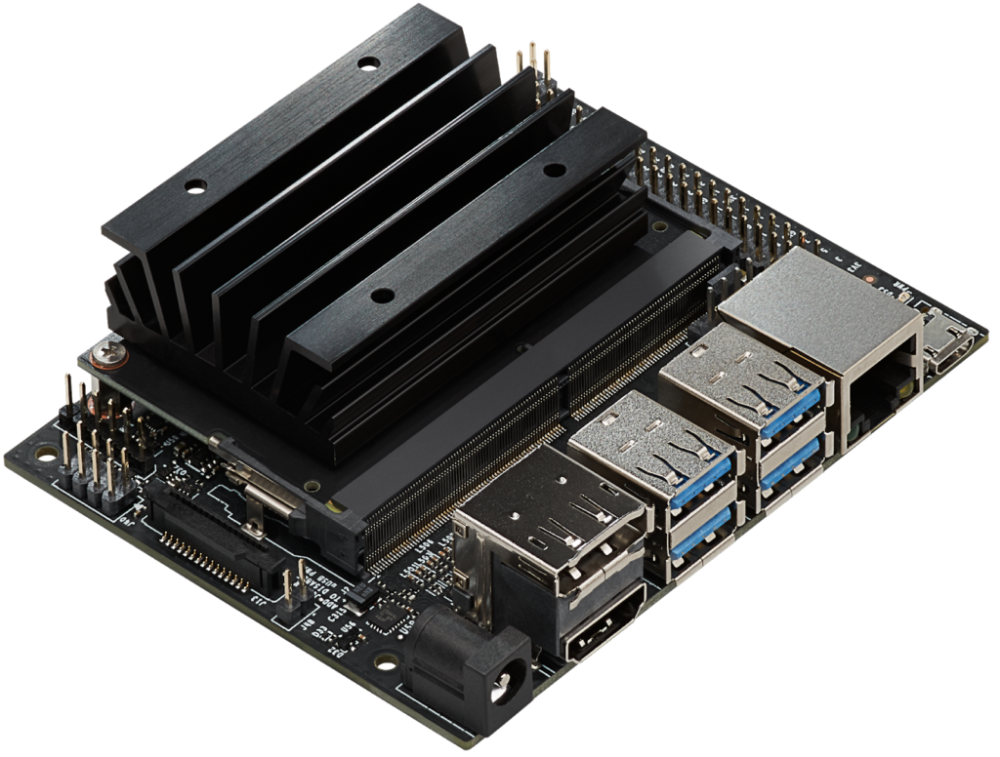
Embedded AI Project
Ioannis Dasoulas
A detailed guide to set up NVIDIA Jetson devices in order to run custom deep learning
models
from scratch efficiently. The guide contains instructions on booting embedding devices,
configuring internet connection and memory, as well as setting up Python and running
custom
deep learning code.
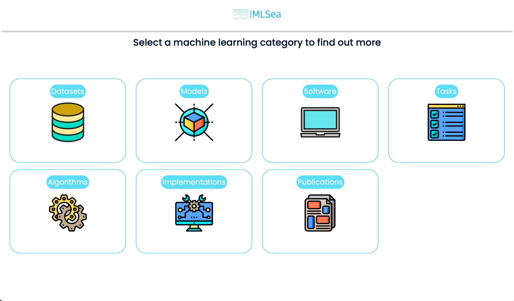
Publication
Ioannis Dasoulas, Duo Yang, Anastasia
Dimou
A web application built on-top of MLSea-KG, which allows seamless search over machine
learning
knowledge from all over the web. The user is able to search for machine learning
datasets, models,
software, tasks, implementations, algorithms and publications as well as view their
metadata. The application
is open-source.
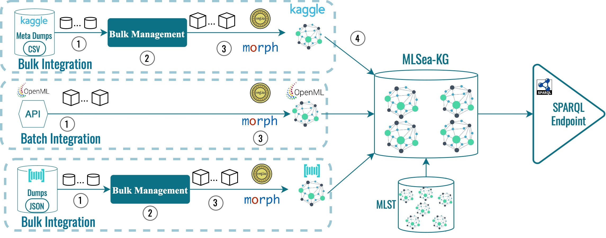
Publication
Ioannis Dasoulas, Duo Yang, Anastasia
Dimou
A declaratively constructed and regularly updated KG with more than 1.44 billion RDF
triples of ML experiments, regarding datasets used in ML experiments, tasks,
implementations and related
hyper-parameters, experiment executions, their configuration settings and evaluation
results, code
notebooks and repositories, algorithms, publications, models, scientists and
practitioners. It
integrates data from OpenML, Kaggle and Papers with Code.
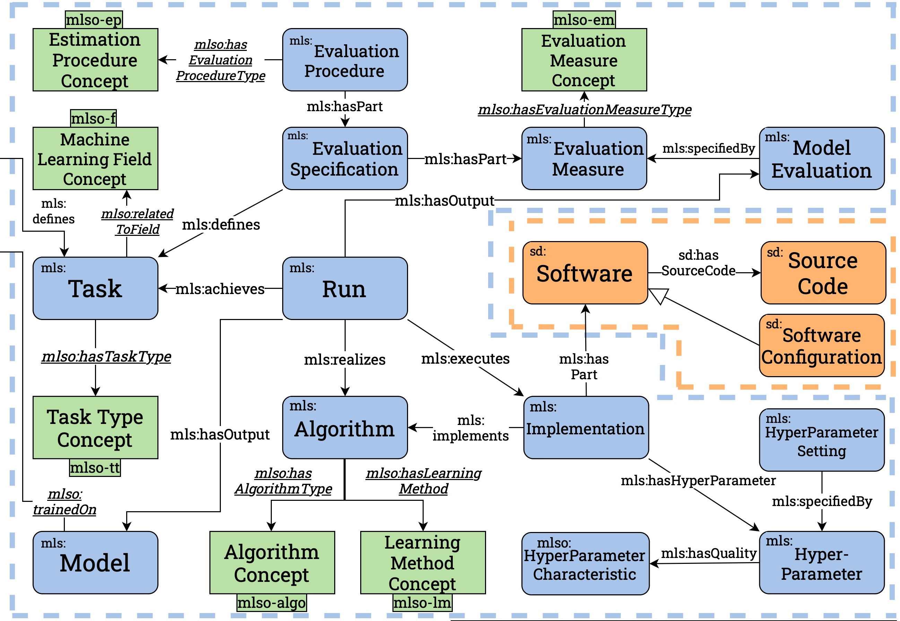
Publication
Ioannis Dasoulas, Duo Yang, Anastasia
Dimou
The Machine Learning Sailor Ontology (MLSO) is an ontology that formally
represents machine learning datasets, along with their features and characteristics,
machine
learning tasks, their implementations, experiments and their executions, relevant
software
and publications, all complemented with rich metadata. The ontology was developed in a
data-centric manner, with the goal of curating data from diverse machine learning
publicly
available sources, examining machine-learning-related data and metadata from online
repositories,
such as OpenML, Kaggle and Papers with Code.
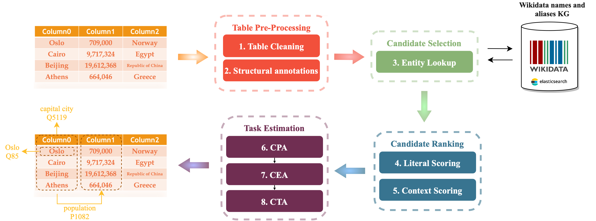
Publication
Ioannis Dasoulas, Duo Yang, Xuemin Duan,
Anastasia Dimou
A versatile semantic table interpretation system able to annotate tables with varied
structures
by using either an external knowledge graph, such as Wikidata, or annotated tables with
pre-defined
terms for training, leveraging kanguage models. TorchicTab achieved 1st place in the
2023
SemTab accuracy competition hosted at ISWC 2023.
Paper
Publication
Ioannis Dasoulas, David Chaves-Fraga,
Daniel Garijo, Anastasia Dimou
A method to construct RDF graphs from data produced by a software process and stored in
RAM.
RML's syntax is extended to describe software produced data sources. Morph-KGC is
extended
to also construct KGs from Python data using the proposed syntax.
Paper
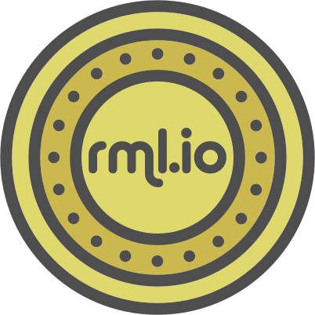
Publication
Ana Iglesias-Molina, David Chaves-Fraga,
Ioannis Dasoulas, Anastasia Dimou
A set of updates over the YARRRML serialisation to empower it with the latest
necessities for constructing RDF graphs,
accompanied with an implementation of these features in a new open-source translator,
Yatter, currently used in different
real use cases and international projects, as well as with a qualitative comparison of
this proposal against similar state-of-the-art
serialisations, and their associated translators over a set of conformance test cases.
Paper
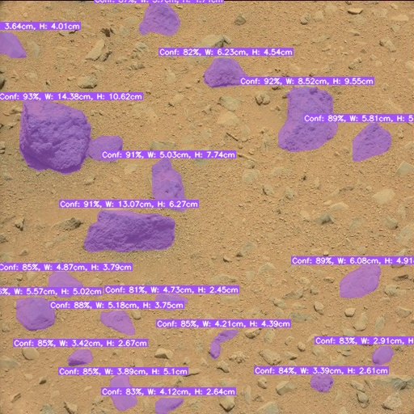
Computer Vision Project
Ioannis Dasoulas
Computer vision project that aims to identify and segment rocks in a Mars-like
environment.
YOLOv8 is used for rock detection and segmentation, as well as the MarsData dataset.
Project is
developed with pytorch, ultralytics, supervision and cv2 packages. For size estimation,
a depth camera
is used to estimate the size of the rocks. Model is also deployed on an NVIDIA Jetson
Nano device, allowing
real-time detection on rover cameras.
Code will soon be open-sourced.
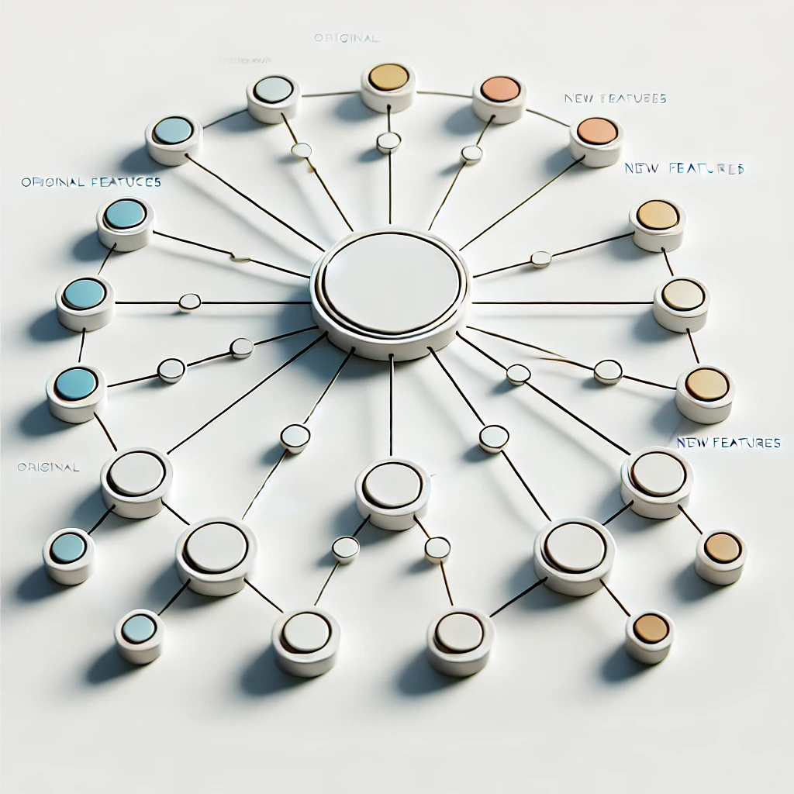
Data Engineering Project
Ioannis Dasoulas
Data engineering demo that leverages semantic table annotation to analyze tabular
data, providing information about the column cells, types and relationships. The
semantic
annotations are used for querying external large knowledge bases and extracting more
features about the
table. In this demo we start with a table of airplanes, airplane families and airlines
and manage to
automatically extract new features such as wingspan, plane length, height and maximum
operating altitude.
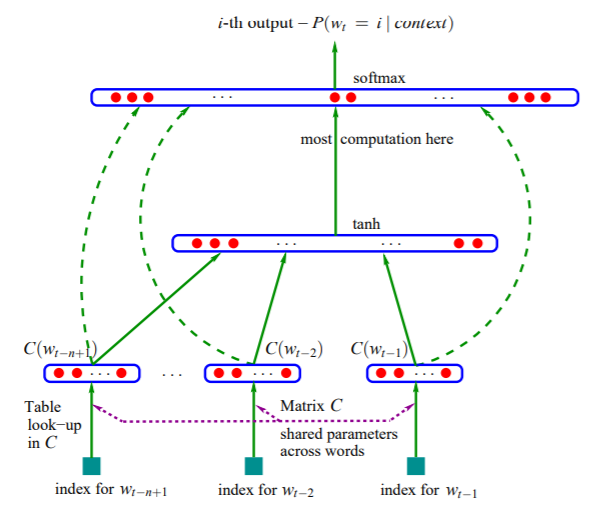
Natural Language Processing Project
Ioannis Dasoulas
This project explores the usage of basic n-gram neural networks for character
generation. A trigram neural network is trained on character pairs from greek city names
to produce novel city names. The project is an exercise task inspired by makemore's
challenges. PyTorch is used for model development and training.
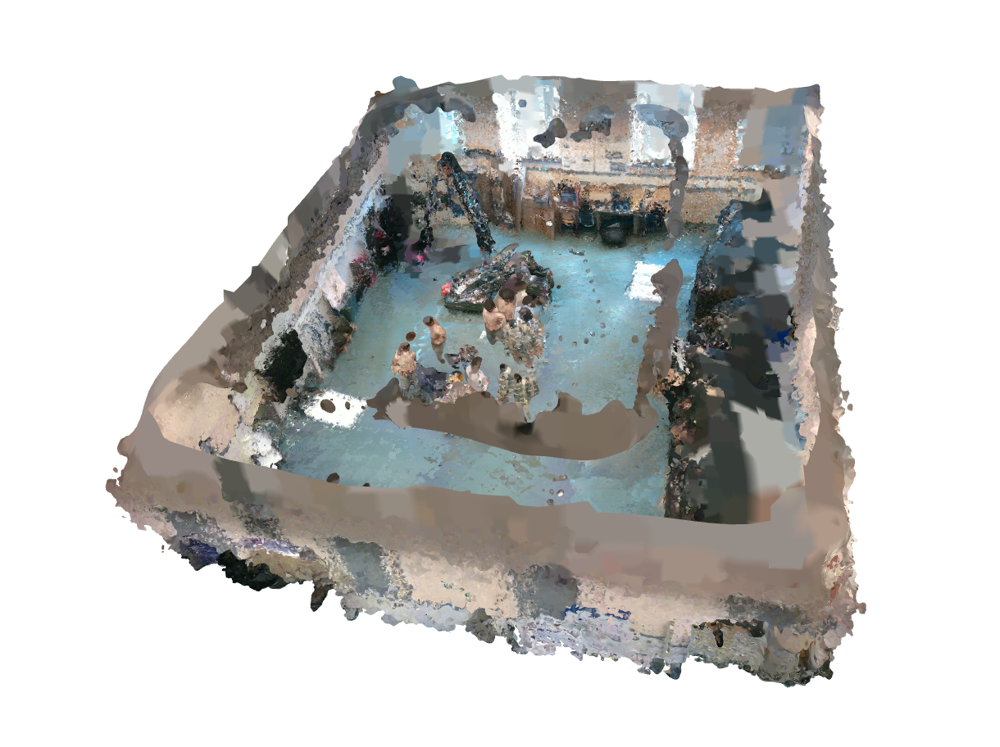
Robot Navigation Project
Ioannis Dasoulas
Robot navigation project that leverages point clouds inferred by rovers to reconstruct
the surface and spaces around it. Different surface reconstruction and point cloud
processing methods are tested. Point cloud segmentation are also leveraged to cluster
the incoming point clouds. Open3D package is used.
Machine learning project (Diploma Thesis)
Ioannis Dasoulas
Three chess engines (Python Machine Learning Chess Engine) based
on machine learning, and more specifically on reinforcement and supervised learning. The
chess engines were
developed using Python programming language. In total, three different game models
were created, a model that was trained by playing games against itself, a model that
was trained with data from past professional games stored in online databases and a
combinational model that was trained using both methods. The engines’ choice of
move is made using Monte Carlo Tree Search, which is a heuristic algorithm for certain
types of decision-making processes.
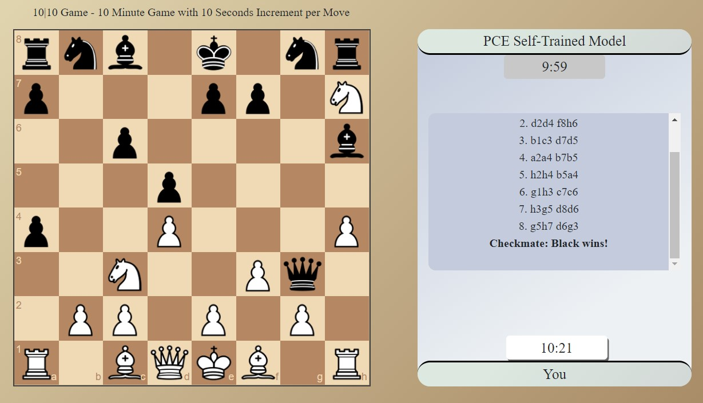
Web development project (Diploma Thesis Side Project)
Ioannis Dasoulas
Online application that allows the user to play against the chess engines
mentioned on the above project, but also to watch them play against each other. The
website was
created using, Python (Flask API), HTML5, CSS and Javascript.
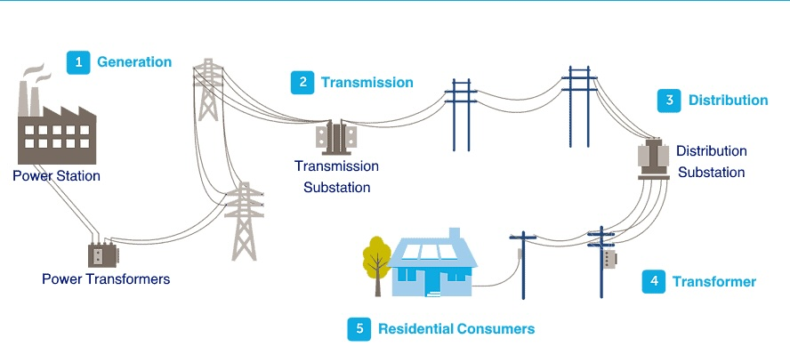
Database Application
Ioannis Dasoulas, Aristeidis Dourdounas
Application about an energy distribution system. The app is meant to be used by a
company
that manages the distribution of electrical energy. The app provides a general picture
of the distribution network, providing information about citizens' energy consumption
and the energy produced by indepedent units of renewable energy. The project is written
in Python and SQL.
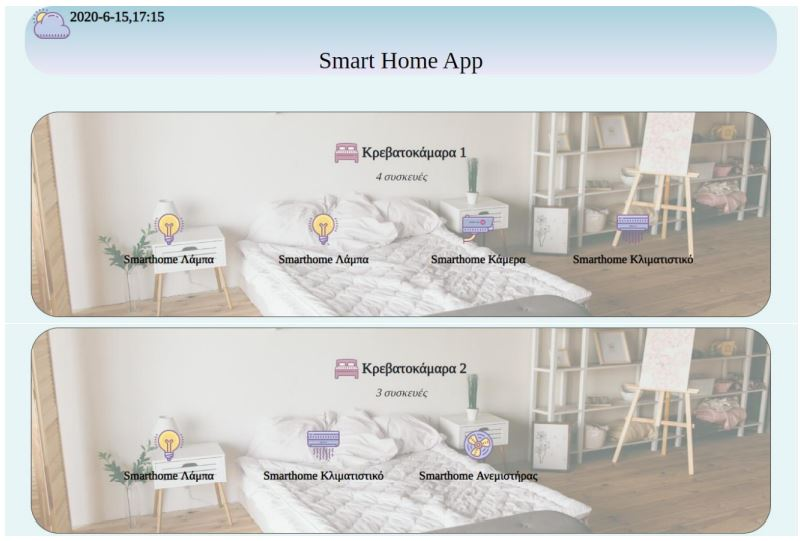
Web development project
Ioannis Dasoulas, Christoforos Vaggelis
Application that simulates a real smart home application which enables the user to
control smart devices in his/her house and assign each device to a room of his/her
house. The application provides three access levels for three different classes of
users, assigned by the administrator of the house. Application is written in HTML5, CSS,
Javascript, using Node JS and express.js for backend as well as Bootstrap for frontend.
Machine learning project
Ioannis Dasoulas
Python project using 9 house characteristics such as location, area population and
number of rooms
to predict the value of houses. The prediction is accomplished using: a)
Least Mean Squares Linear Regression, b) Ordinary Least Squares Regression and c) Neural
Network.
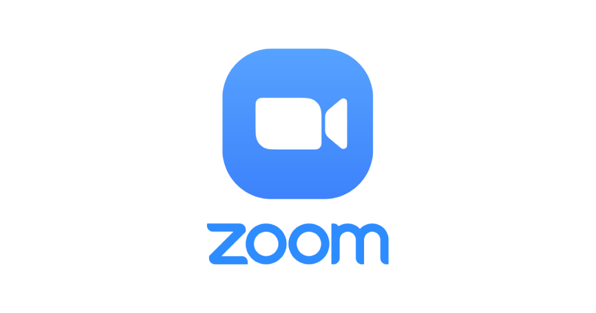
Human-Computer interaction project
Ioannis Dasoulas, Christoforos Vaggelis
Zoom optimization project about designing an application named "MyDidaskalia" used for
modern online lessons. The first part of the project was evaluating well known
applications used for this purpose. The second part was choosing one of those
applications (Zoom was chosen) and trying to improve it following human-computer
interaction rules.
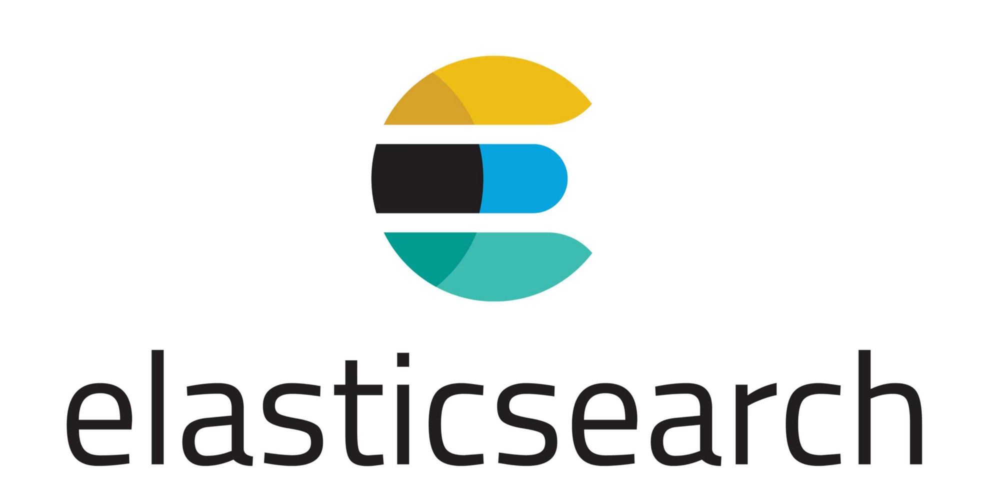
Data retrieval project
Ioannis Dasoulas
Movie search engine based on elasticsearch. The search engine decides the order of
results' presentation
utilizing machine learning techniques. The order of presentation depends on elasticsearh
similarity metrics, user ratings,
average ratings and user clustering. Word embeddings were also used to predict missing
ratings of certain movies for the users.
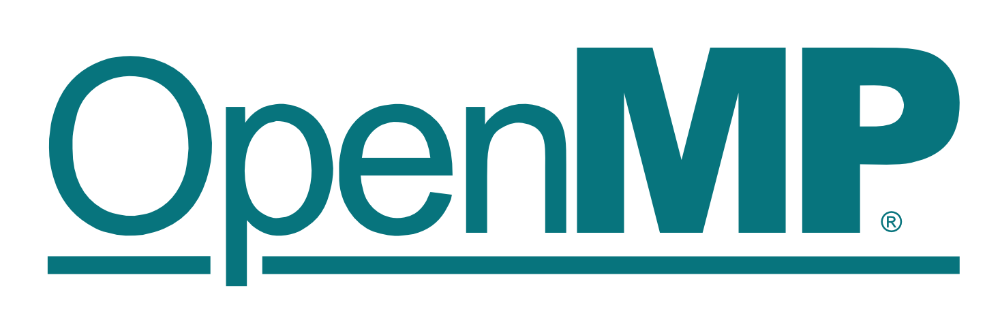
Parallel programming project
Ioannis Dasoulas
Four projects about the utilization of OpenMP library in parallel programming. The
library is used to
accelerate the runtime of the classic K-Means algorithm, the travelling salesperson
problem and the error-backpropagation
computation in neural networks. All algorithms are written in C language.
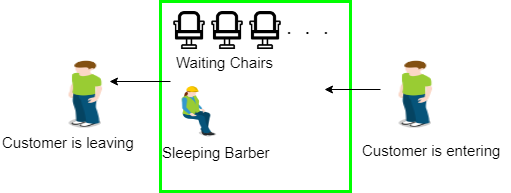
Java multi-thread project
Ioannis Dasoulas
Classic sleeping barber problem implementated in Java language using object oriented
techniques and thread syncronization.
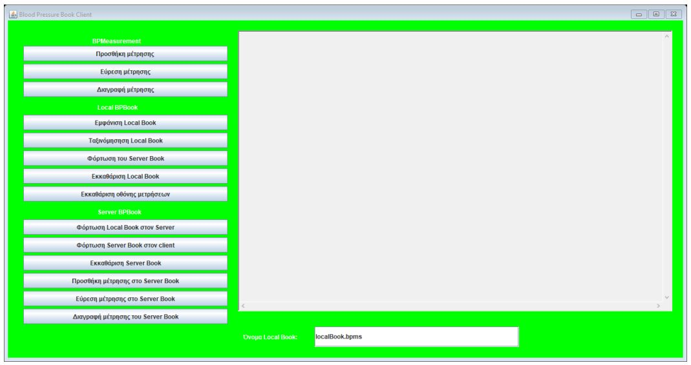
Java server-client project
Ioannis Dasoulas
Application that has both server and client modes. Users can send medical data through
the client interface
to the server or use the server interface to view data sent by the clients, sort them,
find spesific details, delete them or save
them to a local file.
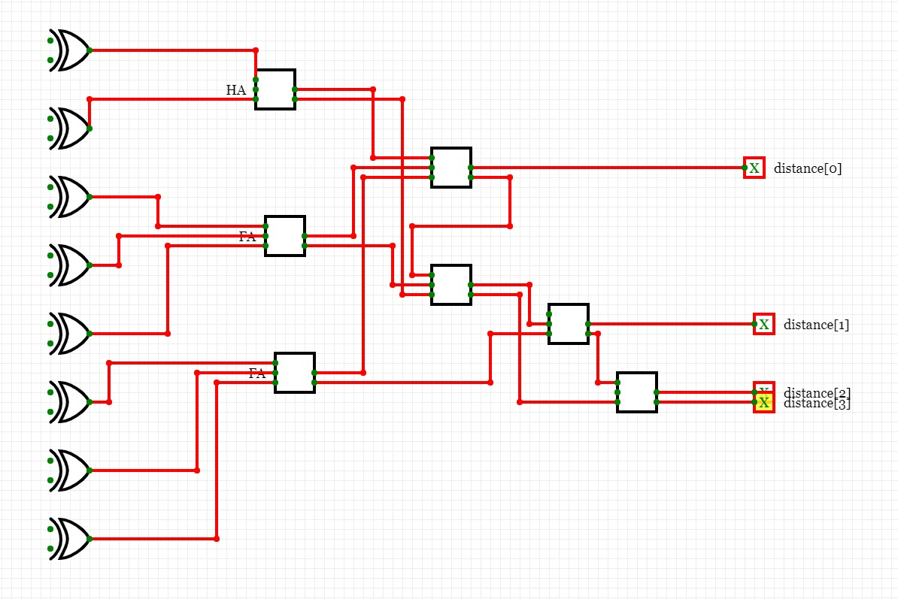
VLSI project
Ioannis Dasoulas
Classic circuits simulation and experimentaition using VHDL language and the ModelSim
environment.
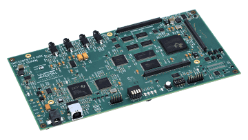
Digital Signal Processing project
Ioannis Dasoulas, Dourdounas Aristeidis
C67 DSK board programming using Assembly and C language. The board was used for
interrupts experimentation,
A/D and D/A conversion, sampling, creation of FIR and IIR filters, creation of a DTFM
decoder and creation of a spectrum analyzer.
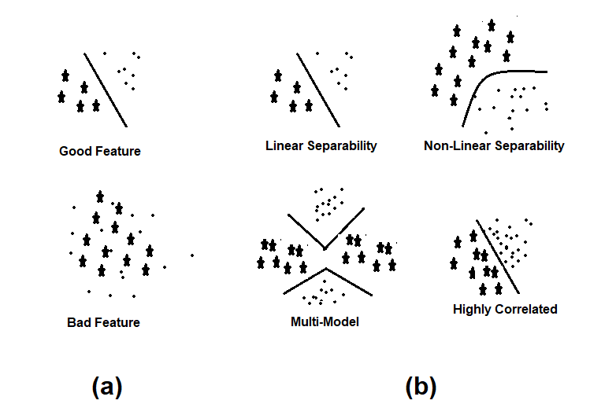
Pattern Recognition project
Ioannis Dasoulas
Pattern recognition projects using Matlab language. Projects include pattern sorting
using distance functions,
K-Means algorithm implementation, Perceptron algorithm implementation and data
classification.
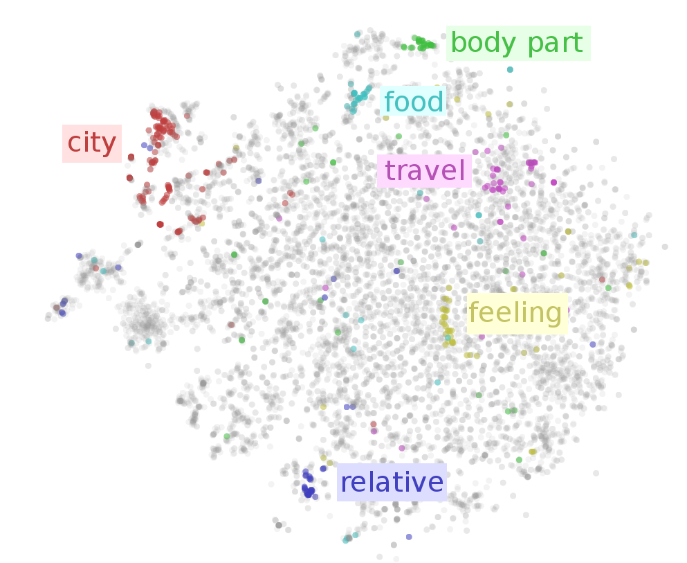
Data Mining project
Ioannis Dasoulas
Mail classification (real or spam) and patient classification (possible stroke or not)
using data mining and
artificial intelligence techniques. Techniques include creating a K-Nearset-Neighbors
model, creating a Random Forest Classifier
model, as well as word embeddings with the implementation of a Doc2Vec model supported
by a neural network. Project was implemented
using Python 3.7.
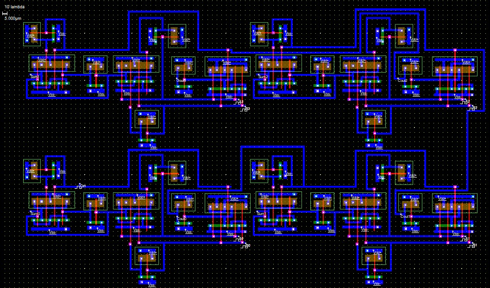
VLSI project
Ioannis Dasoulas, Vaggelis Christoforos
Design and simulation of basic and complicated CMOS circuits, study of the parasitic
capacities, the delay,
the critical path delay and the energy consumption of CMOS circuits using the Microwind
tool. Also, LtSpice was used to design
some of the circuits and simulate them.